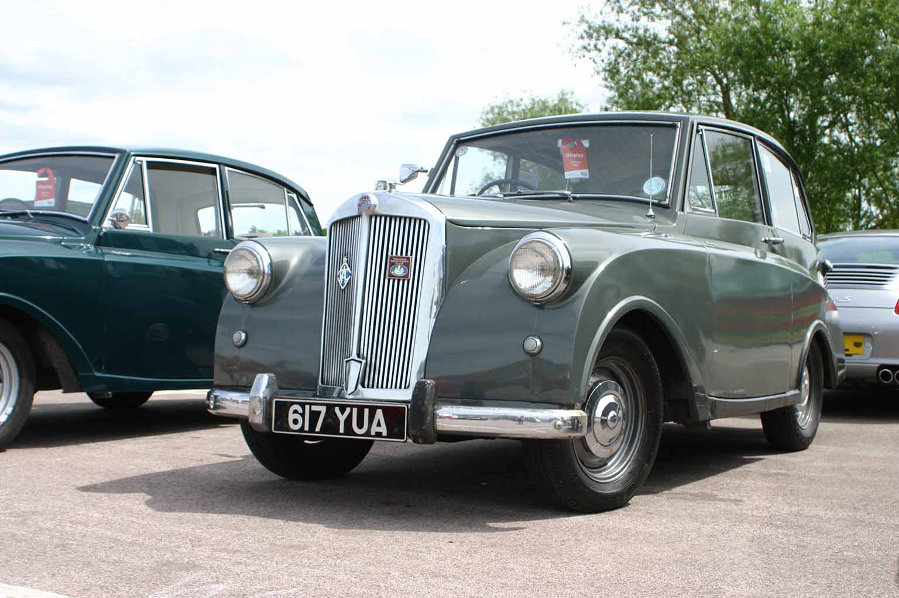
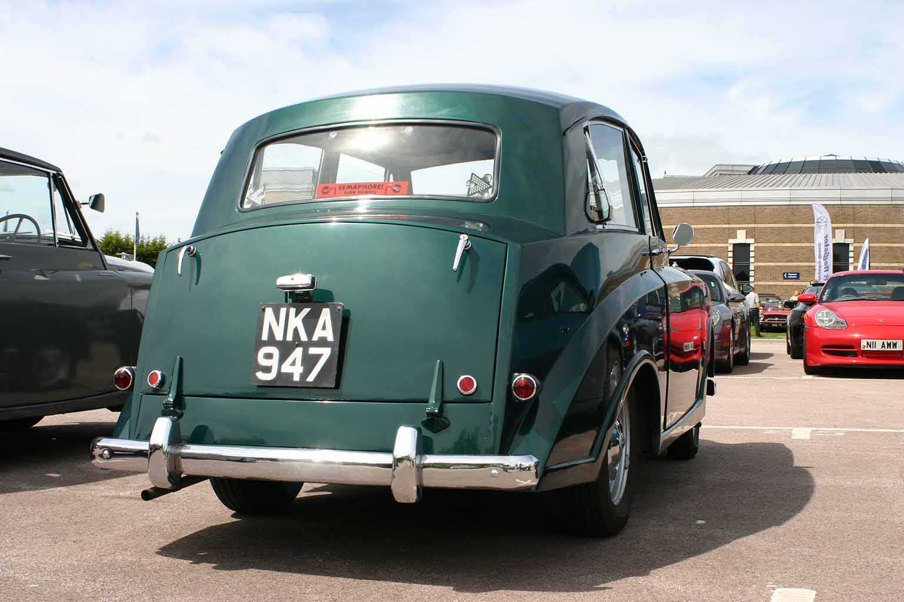
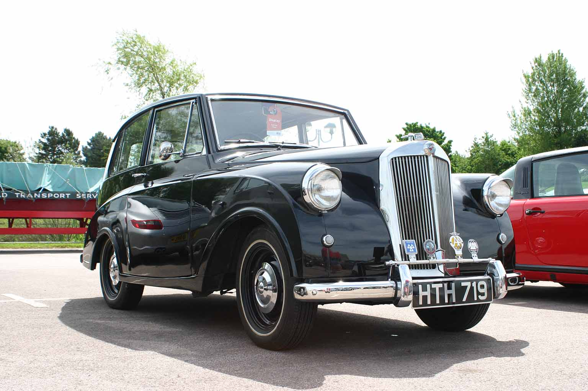

British Motor Museum – “Bank Holiday Delight”
28th May 2017
Report by John Banks
With the sun glinting through the curtains, it was time to get organised for another vintage car journey. Camera and sunglasses to hand, wearing full Mayflower regalia, I was now ready to depart.
After coaxing Little Nell into life, we set off to our rendezvous point to meet-up with a convoy of Mayflowers to the British Motor Museum at Gaydon.
As we travelled through the countryside, a timely arrival was achieved and the organisers instructed us to park-up together.
On the horizon, a recognisable Razoredge look could be seen; another Mayflower was on its way. After all manoeuvres were complete, the wonderful line-up of vehicles glimmered in the sunshine.
All three different coloured Mayflowers looked superb and gathered interest from show visitors. The Honda Insight hybrid cars were next to the Mayflowers creating a fascinating modern and classic scene.
After enjoying all the various makes and models, as well as a collection of army vehicles, a visit inside the museum was needed.
A mesmerising myriad of cars could be seen with racing and movie cars on display, a truly priceless collection. A pleasant surprise for the eagle-eyed visitor, amongst all the exhibits, was another Mayflower on view, making a total of four to be spotted.
After enjoying all the facilities and refreshments, it was time to journey home and safely put Little Nell away, ready for another classic adventure in the future.